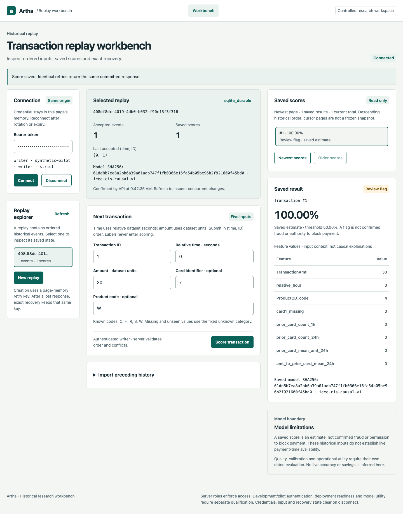

Artha
Replay transactions in time order with four current-input features and four prior-history features, then recover the exact saved score after an uncertain response.
Published commit 8e3ff90 passes 488 Python tests and strict workbench/container recovery. Separate hosted recovery and sustained-workload jobs pass. Optional ULB serving is versioned; its original benchmark run failed cleanup after measurement and final per-row predictions were not retained. Public backend deployment remains open.
System boundary
- 01Native workbench → scoped FastAPI replay routes
- 02Shared current-input/prior-history features → unchanged saved model artifact
- 03SQLite transaction → score, feature state and audit
- 04Exact transaction retry → persisted result inspection
Historical replay is not a bank deployment. Amounts retain dataset units; probabilities are model estimates. Hosted synthetic fixtures prove contracts, while the separate real-data study measures the frozen model.

Data provenance: benchmark and demo
Real, anonymized ULB/Worldline credit-card transactions supply the separate offline model benchmark. The workbench demo uses invented transactions and a synthetic test artifact for repeatable API, recovery and workload checks. The original real-data study failed cleanup after measurement and did not retain final prediction arrays; real provenance does not remove those limits.
The failure worth demonstrating
Abort a scoring response after the server may have committed. Preserve the transaction identifier and exact content. Recover its saved result; a conflicting payload must be rejected. Failed selection disables writes until authoritative details recover, and old connection responses cannot retarget the editor.
Recovery and bounded browsing
Durable replay creation binds an exact retry key to canonical content. Keys survive retention/deletion as tombstones; retry returns 410 rather than silently recreating removed data. Saved-score cursors bind tenant, replay and historical tuple. A failed inspection cannot claim recovery succeeded; old login responses cannot replace a new connection.
Data and durability decisions
The historical model has weak utility and unknown prior whole-source exposure. Treat the existing IEEE-CIS source as development-only; no later suffix is an unseen final. V1 stays immutable. Thirty-seven durable-file tests verify full hashes, exact joins and one committed grading reservation before label access. Failed reads and crashes consume attempts. These invented fixtures establish neither OS isolation, selected-model execution nor independently reviewed final data.
Separate model study · 19 October 2026
The new ULB/Worldline study uses 30 PCA-schema inputs and is separate from the exposed IEEE study. Reported AP is 0.7478. Reviewing the top 5% finds 68 of 75 frauds (90.67% recall), with 2.39% precision. The original run failed cleanup after measurement; missing final predictions prevent independent per-row recomputation. Cleanup was repaired using synthetic fixtures. Public two-day European data do not establish customer performance. Optional serving passed retained-artifact checks on invented inputs.
Scaling decision
SQLite makes the single-node write boundary explicit. Admission control bounds concurrent work and exposes overload instead of hiding a growing queue. A future multi-node design needs a shared durable store, partition ownership for causal histories, a migration/restore drill and workload evidence before claiming horizontal scale.
Completed scoring and operating proof
The separately dated 12 October local paced workload completed 4,800 scores over two minutes with four ordered clients at 10 requests/s each and zero failures. Sampled resources, administrator metrics, exact score/key recovery, separate-file online backup/restore and configuration rollback are recorded. This measures serving on generated unlabeled inputs, not fraud accuracy, saturation, off-host durability or application-binary rollback.
Operating evidence and failure visibility
The unchanged one-second hosted smoke checks at least4 completed scores at5rps, p95 below100ms, sampled RSS below512MiB and zero failures. Its exact samples/protocol are retained and independently audited. An earlier PR run failed an unreported combined gate while a push run passed; the observability repair exposes future measurements without changing thresholds. A new pass cannot retrospectively prove the original cause.
Cross-runner recovery and sustained workload · 19 October
A separate hosted workflow transferred a synthetic SQLite backup between jobs, restored exact saved responses and continued scoring. Its native two-minute paced workload completed 4,800 scores with zero failures; p95 was 5.60 ms and sampled API RSS peaked at 166,039,552 bytes. All 4,800 request samples and 120 resource samples were recomputed from retained output. This uses an invented fixture model and does not establish saturation, public latency, production RPO/RTO or fraud quality. Alert-state fault tests pass; external alert delivery remains open.
Reproduce the engineering proof
Use Python 3.11 and the canonical README’s hash-pinned causal CI environment with Playwright/Chromium. The native verifier owns a disposable FastAPI/SQLite service and generates a tiny synthetic artifact; no historical dataset, protected final, Docker or model download is required. Use an unused output directory. The historical model and 100k study remain separately documented.
python scripts/verify_workbench.py --output reports/my-interview-workbench-001
node operator/tests/selection-state.test.cjs
node operator/tests/identity-state.test.cjs
node operator/tests/workbench-state.test.cjs
node operator/tests/transport.test.cjs